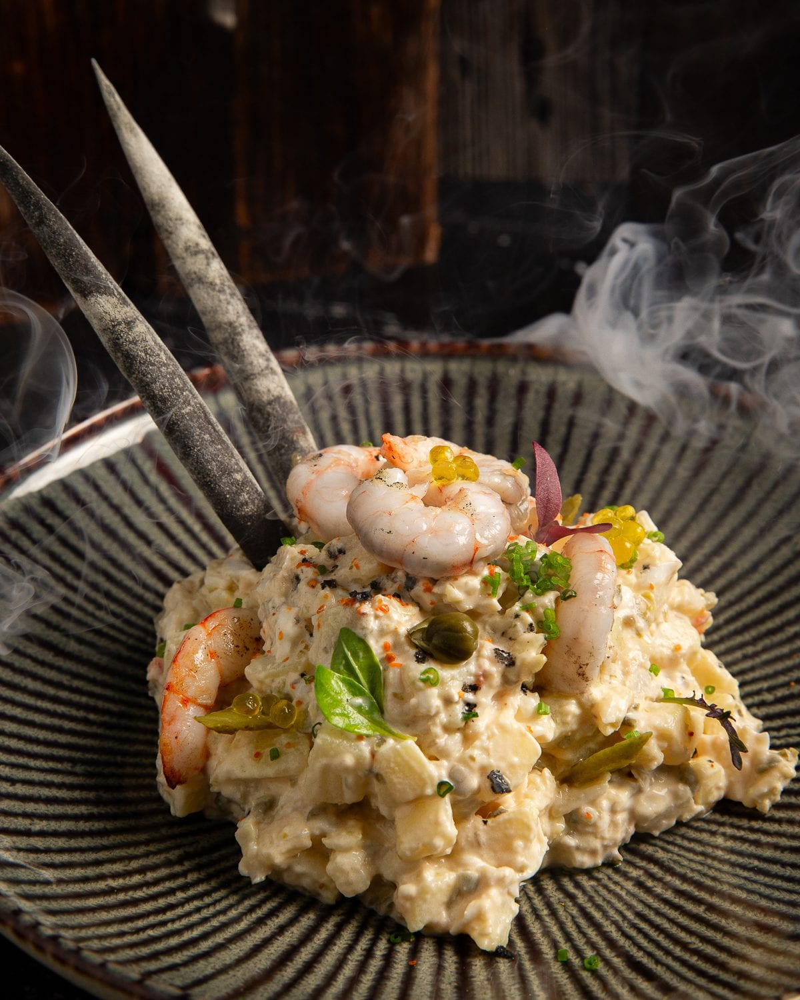
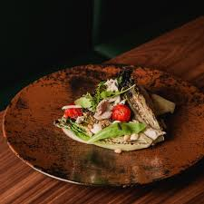

Por qué empezamos aquí
Una propuesta 360° donde el fuego manda
Kema representa una cocina directa, centrada en el fuego y en la calidad del producto, con una puesta en escena moderna y una propuesta líquida diferencial.
Esperamos encontrar una cocina que respete el producto y potencie el sabor a través de la brasa, con carnes, pescados y propuestas equilibradas.
Cambrils
5 de marzo de 2026
Brasas & Coctelería
Aucalà & Picasoques


La brasa como eje gastronómico — producto directo, fuego y sabor
Las personas detrás de Kema
FR
Fanni Rom & Antonio Martínez
Dirección
Una saga con experiencia de sobra en restauración.
MJ
Martín Juza
Jefe de cocina
Trayectoria internacional, formado en Praga. Experiencia en Madrid, Barcelona y Tarragona.
RA
Ramon Accensi
Gerencia
Amplia trayectoria en sala y cocina. Responsable del Grita Fuego Group.
Ficha del restaurante
Cambrils, Tarragona
Brasas & Coctelería
977 364 054
kemacambrils.com
Visita: 5 de marzo de 2026
Durante la cena compartiremos algunos momentos en stories. La crónica completa llegará días después.
Leer la crónica completa →